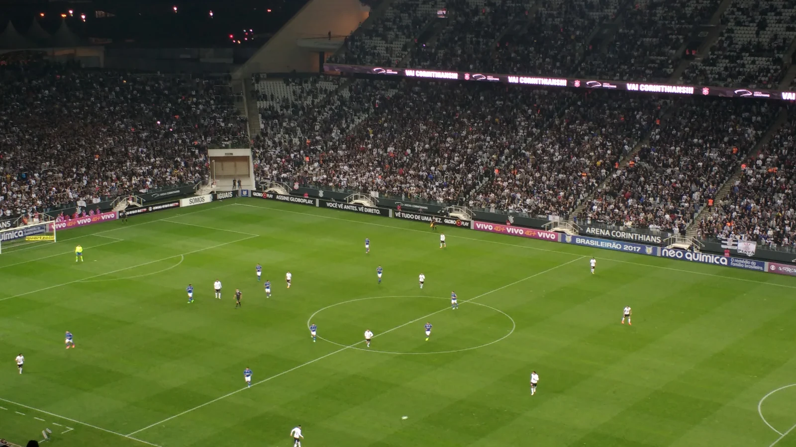
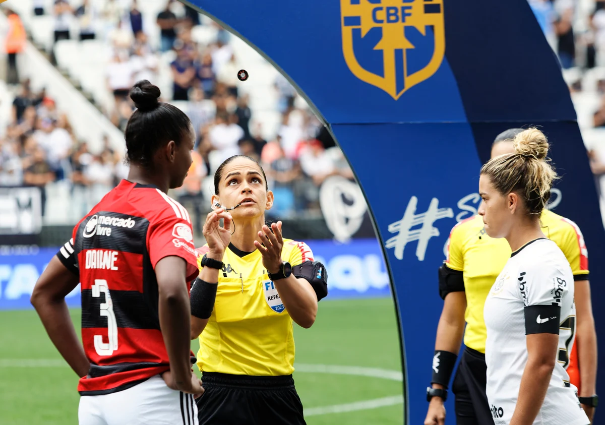

DESTAQUE DA FIEL
A PAIXÃO PELO TIMÃO MERECE UM PORTAL À ALTURA.
Notícias, jogos, análises e a força das arquibancadas. A Central da Fiel está sendo preparada para você.
CONHECER O PORTAL →NOTÍCIAS, JOGOS, ANÁLISES E TUDO SOBRE O CORINTHIANS
Notícias, jogos, análises e a força das arquibancadas. A Central da Fiel está sendo preparada para você.
CONHECER O PORTAL →Corinthians × Mirassol
Sex, 30 de outubro · 20h (Brasília)
Neo Química Arena
Brasileirão 2026 · 33ª rodada
24/10/2026 · São Januário
Brasileirão · 32ª rodada
| # | CLUBE | P | J |
|---|---|---|---|
| — | Dados oficiais em breve | — | — |
Tabela ao vivo ainda não integrada.
CONSULTAR CLASSIFICAÇÃO NA CBF ↗
